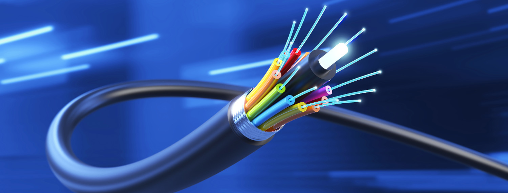

Tipos de cables de red
Tipos de Cables de Red En una instalación de cableado estructurado se utilizan diversos tipos de cables, según las necesidades de velocidad de transmisión de la información que tenga la empresa u organización que va a utilizar la red informática, y según las características físicas de cada uno de los tipos y categorías de los cables de red disponibles.
En este artículo vamos a explicarte cuáles son los distintos tipos de cables de red según su composición y qué categorías de cableado existen, para que puedas tomar una decisión informada sobre cuáles debes utilizar en tu infraestructura de redes informáticas.
Este tipo de cableado es el más caro y de mayor calidad. Es perfecto para aquellos ambientes en los que existen muchas interferencias eléctricas, ya que la fibra óptica no se ve afectada por estas interferencias ni por la humedad ni por la iluminación. Son utilizados para conectar edificios permitiendo una transmisión de datos de altísima velocidad, y permiten cubrir distancias de cableado superiores a los cables coaxiales y a los cables de par trenzado.